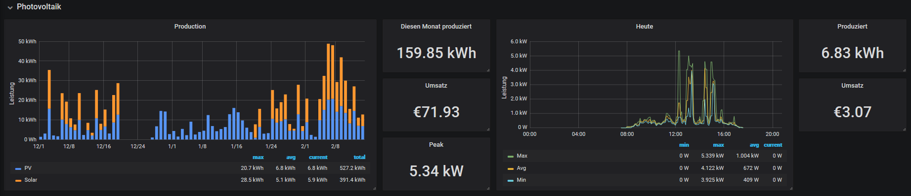

Mein neuer Inverter bietet eine Vielzahl von Datenpunkten welche ich aktiv mitlogge. Ich erklaere wie ich diese auslese und verabeite.
__MORE__
Da der Inverter Modbus unterstüzt war das natürlich mein erster Versuch an die Daten zu kommen. Mit Python und pymodbus habe ich mir einen kleinen Modbus Master Service geschrieben welcher alle 10 Sekunden rund 20 Datenpunkte abfragt.
Das lief auch einige Stunden ganz gut. Ich musste dann aber feststellen dass das Modbus Modul Nachts, um Strom zu sparen, ausgeschalten wird. Desweiteren war Modbus garnicht so zuverlaessig wie gedacht. Ich denke ich hab den Inverter etwas mit der Abfragegeschwindigkeit überfordert.
Ein moderner Inverter von SMA bietet ein Webinterface an welches die Daten in verschiedenen Charts darstellt. Ich dachte vielleicht gibt es eine oeffentliche API dazu aber leider konnte ich nichts dazu finden.
Also habe ich mir mal den Traffic zum Inverter über die Devtools des Browsers angeschaut.
Zuerst wollte ich den getValues Endpunkt ansprechen aber ich wusste nicht was die verschiedenen Parameter machen. Ein Request auf getValues sieht in etwa so aus:
POST /dyn/getValues.json?sid=xxxx
{"destDev":[],"keys":["6800_00A21E00","6800_00823400","6180_104A9A00","6180_104AB700","6180_084ABC00","6180_084A9600","6180_084A9800","6100_004AB600","6800_088A4D00","6180_084A6400"]}
Dann kam ich auf die Idee mir automatisch den CSV Export herunterzuladen und zu verarbeiten.
Es gibt 2 Arten von Exports: Tagesdaten als 5 Minuten oder 1 Sekunden Werte
So ein Export besteht aus mehreren CSV Dateien welche jede Nacht zu einer .zip verpackt werden.
Um auf die Dateien zu kommen gibt es den getFS Endpunkt.
POST /dyn/getFS.json?sid=xxx
{"destDev":[],"path":"/DIAGNOSE/ONLINE5M/"}
{
"result": {
"XXXX-XXXXXXXX": { // Irgendeine ID
"\/DIAGNOSE\/ONLINE5M\/": [
{
"f": "DA190912.ZIP", // Dateiname
"tm": 1568310258, // Timestamp
"s": 32200 // Dateigroesse
},
{
"f": "DA190919.ZIP",
"tm": 1568914216,
"s": 32300
},
{
"f": "DA190925.011",
"tm": 1569429451,
"s": 12006
}
...
]
}
}
}
Da ich nun alle Namen habe konnte ich mir die Dateien einfach per curl herunterladen.
curl -s -k -X POST -H "Content-Type: application/json" -d "{}" "https://xxx/fs/DIAGNOSE/ONLINE5M/DA190919.ZIP?sid=?sid=xxx" --output "DA190919.ZIP"